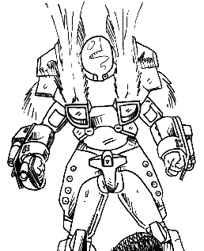

The following material is from
THE THIRD INVID
WAR, a fan supplement by
Dave Deitrich and
Chris
Meadows. Please feel free to use, copy, and distribute
it as you see fit. All we ask is that you give proper credit to us and do not
claim that it is your own work. Comments and suggestions are welcome.
THE VR-120 FERRET

BACKGROUND
The VR-120 Ferret is a new cyclone variant that places an emphasis on speed
and agility, rather than strength and firepower like the VR-152 or VR-141.
Smaller, lighter, and less armored than its cousins, the Ferret is capable of
an amazing 240 mph (384 kmph) on open roads in motorcycle mode, and a 215 mph
(344 kmph) air speed when flying in battloid. This speed combined with the
phenonemal agility possed by all cyclones makes the Ferret ideal for
reconnaissance and scouting missions. The speed does come at a price, though;
as mentioned above, the armor on the Ferret is reduced and some armaments have
been cut (compared to other newer Cyclone designs) to reduce the overall
weight of the cyclone. Usually Ferret pilots
do not engage in direct combat with enemy forces. Instead they use speed and
agility to avoid detection and relay information to their command, which can
then call in appropriate forces to deal with the threat.
The VR-120 Ferret is the smallest of the new cyclones, closely resembling the
old VR-038-LT at first glance. The nose is larger, however, and weapon
systems are mounted on the front wheel hub. The Ferret is popular with scouts
and nomads among the resistance on Earth, who value its ability for speed and
stealth. Ferret Pilots usually wear the standard CVR-4 body armor.
SCHEMATICS
 Click on the icon to the left to view some pictures from the REF Cyclone
maintenance guide, document REF-8834-149-1775.
Click on the icon to the left to view some pictures from the REF Cyclone
maintenance guide, document REF-8834-149-1775.
RPG STATS
Model: VR-120 Ferret
Class: 2nd Generation M.O.S.P.E.A.D.A. Reconnaissance Mecha
Crew: One
M.D.C. BY LOCATION:
Motorcycle Mode Battlesuit Mode
---------------------------- ----------------------------
Headlight 5 Tires (2, rear) 5
Front Tire 5 Thrusters (rear) 50
Rear Tire 5 Forearm Shields (2) 50
Storage Box (2) 2 each Leg Shields (2) 100
Thrusters (rear) 50 Head 70
(1) Main Body 180 (1) Main Body 180
M.D.C. OF BODY ARMOR:
(2) CVR-4 (Standard Military Armor) 70
(2) CVR-3 (Standard Military Armor, Support Personnel) 50
NOTES:
- Depleting the M.D.C. of the Main Body will shut the mecha down
completely.
- Depleting the M.D.C. of the body armor will destroy it and very likely
kill the wearer (10% chance of survival).
The Second Generation Cyclones are equipped with laser resistant
ceramic armor, so laser weapons do only HALF damage. This does NOT
include any other energy attacks such as particle beams or ion blasts,
nor does it help against explosives.
CVR-4C Heavy Armor is incompatible with the VR-120 Ferret.
SPECIFICATIONS
- Motorcycle Mode:
- Maximum Speed: 240 mph (384 kmph)
- Cruising Speed: 100 mph (160 kmph)
- Turbo Boost Fwd: 60 ft (18 m) horizontal
- Turbo Boost Up: 40 ft (12 m) vertical
- Battloid Mode:
- Running: 75 mph (120 kmph)
- Flying: 215 mph (344 kmph)
- Leaping: 30 ft (9 m)
- Thruster Leap: 120 ft (36 m)
- Height:
- Battloid: 6.8 ft (2.0 m)
- Motorcycle: 3.4 ft (1.0 m)
- Width:
- Battloid: 3.2 ft (0.9 m)
- Motorcycle: 1.4 ft (0.4 m)
- Length:
- Battloid: 3.0 ft (0.9 m)
- Motorcycle: 4.8 ft (1.4 m)
Weight:100 lbs (45 kg)
- Special Bonuses:
- The VR-120 Ferret has a +1 bonus to initiative, parry, dodge,
and roll, due to
its greater speed and agility (from lower weight) than normal Cyclones.
This bonus is in addition to any other bonuses the pilot may possess based
on skill or training.
- Cargo:
- The VR-120 has detachable cargo boxes that are connected to the
rear of the bike like saddlebags. The size of each container is 18
inches tall by 20 inches wide by 18 inches deep. The VR-152 can hold 200 lbs
(84 kg) in addition to the rider. Reduce maximum speed by 20% for every
additional 25 lbs (11 kg) over the limit and add -1 to dodge.
Unlike its predecessors, the storage boxes of the new cyclones do NOT
drop off when they convert to battloid mode. Instead, the boxes are
shifted to the lower back, just below the thruster packs and covering
the butt of the pilot. The passenger, however, isn't so lucky.
Main Engine: FF-600 Fusion/Protoculture Engine
- Range:
- 2 protoculture cells will power the cyclone for approximately 12
months before needing refueling. The backup system can operate on 1
protoculture cell for 6 months at no penalty. Constant flying will
drain the protoculture cells twice as quickly for all models. As a
final backup, the cyclone can run on fusion power alone for up to 400
miles on a full tank of fuel, but maximum speed is reduced 15% and
constant flying is impossible. The fusion engine runs off hydrogen, so
any hydrogen-rich liquid (like water or ammonia) can be used for fuel.
Extra gas from the fusion engine is released through an exhaust port.
- Color Scheme:
- Following the new painting scheme for most REF mecha, the VR-120 cyclones
are colored based on where they are stationed. Desert Cyclones are usually
painted in a tan camouflage, Arctic Cyclones are painted a flat white, etc.
This is especially important in the case of the Ferret, as its missions
typically call for the mecha to remain concealed and spy on enemy forces at
close range. Each cyclone is streamlined in a color corresponding to the
position of the pilot. Enlisted Pilots have their cyclones streamlined in
Blue, Aces and low-ranking Officers in Red, and Platoon Leaders in Green.
WEAPON SYSTEMS
- GR-103LT MINI-MISSILE LAUNCHER (2). Although based on the older
VR-038-LT Cyclone, the VR-120 Ferret was equipped with GR-103 shoulder
missile launchers like its newer bretheren to give it more punch. However,
due to the need to keep the Ferret's weight low, the payload for the GR-103s
had to be halved to 3 missiles per launcher, giving a total of 6
mini-missiles instead of the normal payload of 12 for VR-1XX cyclones.
Like the standard GR-103s, the 103LTs have been updated with newer
technology which makes them more
resilient to damage and easier to repair (+20% to repair rolls). In
motorcycle mode, the two missile launchers are side by side in the
nose of the cycle. In battloid mode, the missile launchers are
divided, with one on each shoulder of the mecha. Armor-piercing missiles
are typically issued to Ferrets.
- Primary Purpose: Assault
- Secondary Purpose: Anti-Aircraft, Anti-Mecha
- Missile Type: Any type of REF Mini-missile EXCEPT Plasma.
Armor-piercing are standard-issue for the VR-120 Ferret.
- Mega-Damage: Varies with missile type.
- Rate of Fire: One at a time or in volleys of two, four, or six.
Remember, a volley counts as one melee attack regardless of the
number of missiles.
- Range: Varies with missile type; 20 ft to 1 mile.
- Payload: 3 missiles per each launcher, for a total capacity of 6.
- GR-187 HIP MISSILE LAUNCHERS (2). A new addition to modern
cyclones, the VR-120 Ferret comes automatically equipped with a
pair of GR-187s. These weapons are mounted on the hip/upper leg
shields in battloid mode and in the lower back of the cyclone in
motorcycle mode. It appears as four small tubes built directly into
the armored plate. The missiles can only fire in battloid mode.
- Primary Purpose: Assault
- Secondary Purpose: Anti-Aircraft, Anti-Mecha
- Missile Type: Any type of REF Mini-missile EXCEPT Plasma.
Armor-piercing are standard-issue for the VR-120 Ferret.
- Mega-Damage: Varies with missile type.
- Rate of Fire: One or two at a time.
- Range: Varies with missile type; 20 ft to 1 mile.
- Payload: 4 missiles per each launcher, for a total capacity of 8.
- MODULAR WEAPON SYSTEMS. As with all REF Cyclones, the arm shields
of the VR-120 Ferret are designed to interface with one of the GR-series
weapon modules. One weapon module can be mounted on each forearm shield,
and it is not necessary to mount the same modules on each shield. The
Cyclone's onboard computer system will automatically recognize which weapon
module is installed and adjust the HUD displays on the pilot's helmet
accordingly. Any GR-series weapon module can be used.
Typical VR-120s are assigned two
GR-215 BEAM/LASER CANNON units, or two GR-220 BEAM CANNON/SMG units, though
different weapons may be assigned if necessary or desired. Click HERE for a complete listing of cyclone weapon
modules.
- Hand-to-Hand Combat. Punch does 1D4 M.D. Kick does 1D4 M.D. (The
VR-120 Ferret has an equivalent strength of PS 35) Leap Kick
does 2D4 M.D. Body Flip or Body Block does 1D4 M.D.
- Any type of hand-held weapon can be fired by the pilot while in
cyclone armor, including the new Gallant
1000 Multi-Weapon System.
STANDARD SENSORS AND EQUIPMENT FOR ALL MILITARY CYCLONES
- LASER-RESISTANT CERAMIC COATING: 1/2 damage from laser attacks.
- ENHANCED RADAR WITH HEADS-UP DISPLAY: Can identify
and track up to 40 different targets. Range: 10 miles.
- TARGETING COMPUTER: Uses helmet display instead of retractable sensor
of older models. Provides the pilot with +3 to strike with missiles and
+2 to strike with other weapon systems (Beam Cannons, Lasers, etc.).
Range: 4000 ft (609 m).
- RADIO COMMUNICATIONS: Boosts standard radio in CVR-series armors to
Range: 10 mile (16 km).
- MISCELLANEOUS INDICATORS: Altitude, Speed, Power status, Time, Date,
Direction, etc. All controlled by on-board computer.
SPECIAL SENSORS AND EQUIPMENT FOR VR-120 FERRET CYCLONES
- THERMAL IMAGER: A special optical heat sensor that converts infrared
radiation given off by warm objects into a false-color image for the
pilot. It enables the pilot to see in darkness and through smoke, as
well as providing a +30% bonus for detecting traps or ambushes. Range:
200 ft (60 m).
- NIGHTVISION CAMERA: A low-light amplification camera that allows the
pilot of the VR-120 to see clearly in normal darkness. The camera will
NOT work in pitch-blackness and can be blinded by bright lights such as
flares or weapon discharges. Range: 400 ft (120 m).
- FIBER-OPTIC COMMUNICATIONS SYSTEM: The VR-120 is equipped with a
communcations system that can transmit audio and video signals to a
command base via fiber-optic cable laid along the ground. The advantage
of this system is that it allows clear communications even in heavy
static or jamming situations, and that the communication signal is
virtually undetectable by enemy sensors. The disadvantage is that the
fiber-optic cable must remain intact for the system to work.
Range: equal to the
length of the cable; up to 2 miles.